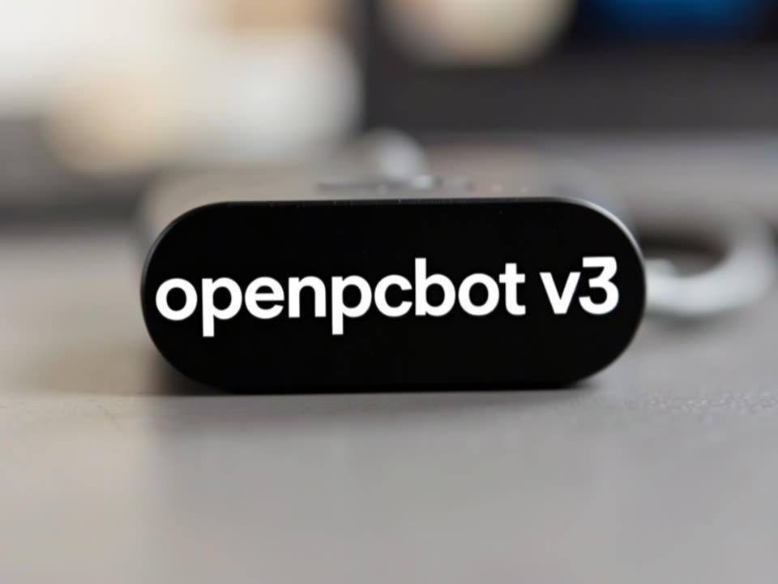

Cola durable en SQLite, gestor de Ollama con preflight de RAM, costo por llamada con presupuesto y un cerebro que recuerda en PT-BR. Funciona junto a v2 hasta alcanzar la paridad.

v2 funciona, pero es un monolito sin cola, sin costo por llamada y sin gestión de Ollama, con dos bloqueos por falta de RAM en agosto. v3 toma lo que ya estaba listo y probado en otros repos locales y lo organiza por capas.
Claim atómico, lease con heartbeat, backoff, idempotencia y drain gradual, portados de inemaccbot con las 107 pruebas originales. Lanes por tipo de trabajo, un claude -p a la vez.
Memorias con salience y decaimiento, búsqueda por FTS5 más vector bge-m3, consolidación nocturna que detecta contradicciones y un vault curado que solo guarda con tu aprobación.
Todas las llamadas de LLM pasan por un único gateway: tier local → barato → premium, presupuesto mensual con bloqueo y preflight que rechaza cargar un modelo grande si no hay 40 GB libres.
Los canales solo traducen a un bus de eventos. El orquestador clasifica con un modelo local pequeño antes de gastar cualquier token en la nube.
Devuelve JSON con ruta, agente y tier. "directo" para conversar; "agente" cuando necesita archivo, shell, repo, web o skill.
Presupuesto → proveedor → preflight de RAM → llamada → costo en chamadas_llm. Ollama cuesta cero, pero cuenta tokens y tiempo.
El job de agente se ejecuta claude -p --output-format json en la lane agente. El resultado y el costo real vuelven al chat de origen.
Cada turno se convierte en memoria. Un hecho duradero genera una propuesta para MEMORY.md / USER.md; lo apruebas con un comando.
Todo local. Las API keys compartidas se leen en runtime desde .env del v2; el v3 solo necesita su propio token de bot.
Solo HTTP en 11434. Nunca un ollama serve en paralelo.
# modelos usados (las mismas tags de v2) ollama pull qwen3.8:27b ollama pull llama3.2 ollama pull bge-m3
El agente se ejecuta mediante un subproceso de la CLI, no con el SDK.
node -v # v20+ claude --version # CLI en el PATH del usuario
Créalo en BotFather. El token de v2 se rechaza al iniciar (dos getUpdates = 409 y bot sordo).
# ~/projetos/openpcbotv3/.env TELEGRAM_BOT_TOKEN_V3=123456:AAH... PORT_V3=3142 PISO_RAM_GB=40
Cinco comandos. Sin token de Telegram, el servicio igual se inicia, con HTTP y CLI.
Copia el ejemplo de .env y completa solo lo que corresponde al v3.
git clone git@github.com:inematds/openpcbotv3.git && cd openpcbotv3 npm install cp .env.exemplo .env # TELEGRAM_BOT_TOKEN_V3, PORT_V3, PISO_RAM_GB, ORCAMENTO_MENSAL_USD
Verifica env, Ollama y modelos, RAM, CLIs, v2 activo, unit y límite de memoria. No cambia nada.
npm run doctor ✅ mismo modelo general que el v2 v2=qwen3.8:27b v3=qwen3.8:27b ✅ RAM 63.8 GB disponibles · mínimo para cargar un modelo grande: 40 GB ⚠️ TELEGRAM_BOT_TOKEN_V3 ausente — canal de Telegram desactivado
Snapshot con VACUUM INTO: la base de datos de v2 nunca se abre para escritura. Idempotente.
npx tsx src/cli/importar.ts memorias del v2: leídas 308 · insertadas 291 · ya existían 17
Unit de usuario con Restart=on-failure, MemoryHigh=1.5G e MemoryMax=2G. El mismo script sirve para reiniciar después de cambiarlo src/ o .env.
bash scripts/instalar-servico.sh # build + daemon-reload + enable + restart; sin sudo journalctl --user -u openpcbotv3 -f -o cat
En Telegram, o por HTTP y CLI mientras no haya token.
npm run cli -- "/health" npm run cli -- "lembra que eu prefiro respostas curtas" npm run cli -- "no projeto X, conta as linhas de src/app.ts" # se convierte en job de agente
Cola, costo, memoria, tareas y cron sin salir de Telegram. El dashboard está en http://127.0.0.1:3142/.
/status [id] # cola por lane o detalle de un job /usage # costo hoy/semana/mes, por tier y agente, presupuesto /health # Ollama, RAM, RSS, cola, heartbeat, canales /memoria lista|buscar|salvar|propostas|aprovar <id> /tarefa add amanhã 9h revisar PR # recordatorio + resumen en /daily /cron lista · /ollama status · /consolidar · /novo
Interacciones reales del día en que se inició v3, con v2 activo en la misma máquina.
tú> qual a capital do RS? e lembra que eu prefiro respostas curtas bot> Porto Alegre. bot> 📝 Guardar no vault? "…prefiro respostas curtas" → /memoria aprovar 1 tú> o que eu te disse que prefiro? bot> Respostas curtas.
tú> no projeto openpcbotv3, conta as linhas de src/fila/worker.ts bot> 🧠 lead — job #7. /status 7 acompanha. bot> 419 # llamadas_llm: claude-cli · sonnet · premium · US$ 0,1465 · 7,8 s # pico de memoria de la unidad: 636 MB (límite 2 G)
/ollama preflight qwen3.6:35b-a3b ⛔ ya hay un modelo grande residente (qwen3.8:27b) — política de 1 residente /ollama descarregar qwen3.8:27b ⛔ este proceso no lo cargó (puede ser del v2) — rechazado
GET /health
{ "ok": true, "rss_mb": 82, "canais": ["telegram","http"],
"ram": { "disponivelGb": 35.3, "swapUsadoGb": 8.5 },
"ollama": { "online": true, "carregados": ["qwen3.8:27b"] },
"orcamento": { "pct": 0, "limite_usd": 50, "travado": false } }v3 se inicia con su propio bot junto a v2. No se elimina nada hasta alcanzar la paridad: todos los comandos de v2 responden en v3, 7 días sin jobs perdidos, costo semanal medido.